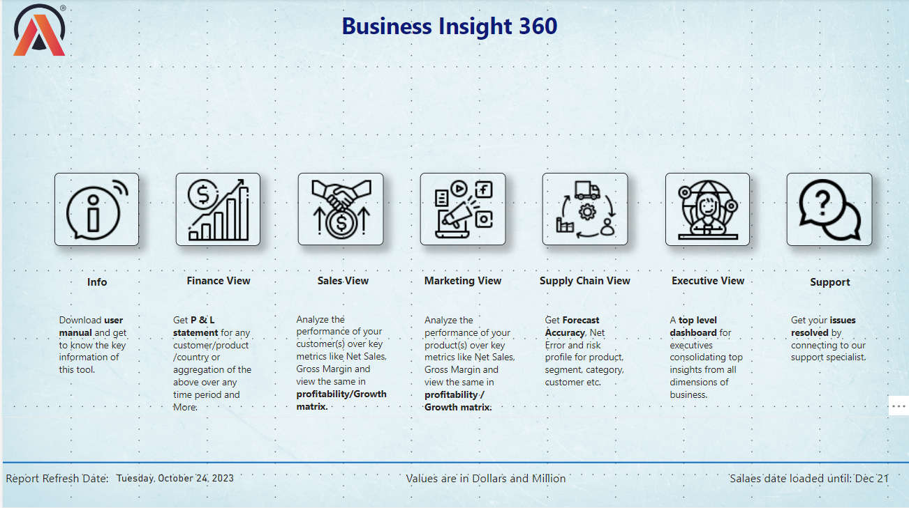

Deep Learning
Deep Learning
Kidney Tumor Identification System
Production-ready deep learning system for kidney CT scan classification with Grad-CAM visual explainability, FastAPI backend, and Docker deployment.
Welcome!
Hello!!! I'm Himel Das. I hold an M.Sc. in Applied Artificial Intelligence and Data Analytics from the University of Bradford, with a background in Electrical and Electronic Engineering. My work focuses on applying artificial intelligence and data-driven methodologies to build intelligent systems. Most recently, I developed AI-based production-grade systems, including a system for classifying kidney tumors from CT scan images and a role-based medical RAG system, which gave me hands-on experience in developing and evaluating AI systems for real-world healthcare problems. In addition, I've contributed to open-source projects, including fixing a scikit-learn compatibility issue in an Artificial Immune Systems library and improving feature engineering in a time-series forecasting benchmarking tool.
My long-term goal is to contribute to healthcare, including AI-driven diagnosis, prognosis, intelligent clinical decision support systems, and embodied/assistive AI in medical settings, as well as automation and robotics in broader domains like agriculture, industrial systems, and autonomous surveillance. Additionally, I'm also drawn to generative AI and its applications across other intelligent systems.
Right now, I'm actively looking for an ML/AI role or a potential PhD supervisor where I can keep working on developing AI-based intelligent systems. If you're hiring or have an opening for a PhD student in this space, I'd love to hear from you.
End-to-end applications demonstrating machine learning pipelines, deep learning architectures, and business intelligence solutions.
Deep Learning
Production-ready deep learning system for kidney CT scan classification with Grad-CAM visual explainability, FastAPI backend, and Docker deployment.
Production-grade medical knowledge assistant featuring JWT-based RBAC gating at retrieval, hybrid search (BM25 + ChromaDB + Cross-Encoder), and conversation-aware query rewriting.
 Machine Learning
Machine Learning
Hourly bike rental forecasting over 17,000+ records using Random Forest (R² = 0.957) with an interactive Streamlit dashboard for real-time allocation.
 Data Analytics
Data Analytics
Large-scale statistical analysis of 1.8M records examining environmental hazards, road designs, and speed limit correlations to accident severity.

Power BI & SQLEnterprise-scale Power BI solution integrating finance, sales, marketing, and supply chain data with snowflake schema modeling and custom DAX.
Full-stack financial tracking application featuring automated schema initialization, Pydantic validation, budget alerts, and dynamic Plotly analytics.
A focused toolkit spanning applied machine learning research, data analytics, and production engineering.
Deep learning architectures, explainable AI, retrieval systems, and predictive models.
Statistical computing, exploratory analysis, structured querying, and executive dashboards.
Production microservices, containerization, databases, and automated CI/CD pipelines.
2019 1st International Conference on Advances in Science, Engineering and Robotics Technology (ICASERT), Dhaka, Bangladesh, pp. 1-5.
2018 International Conference on Computer, Communication, Chemical, Material and Electronic Engineering (IC4ME2), Rajshahi, pp. 1-4.
My coursework spanned machine learning, applied AI, big data strategy, and responsible AI governance, giving me a well-rounded foundation across both the technical and ethical sides of building AI systems. This culminated in a capstone dissertation where I compared Logistic Regression, Random Forest, SVM, and LSTM architectures for predicting logistics disruptions, and proposed a blockchain-based framework for supply chain transparency. In recognition of my academic profile, I was awarded the Turing Scheme UK Grant (2024), which funded my attendance at an international summer school at Aarhus University, Denmark.
Attended on a Turing Scheme UK Grant, competitively awarded and funded by the UK government's international education programme. Learned principles of information visualization and the software tools used to transform complex datasets into clear, expressive, and effective interactive graphical representations. Also explored practical, reproducible data management and statistical workflows using R.
My undergraduate coursework gave me a broad understanding of the fundamental areas of Electrical and Electronic Engineering. On the electrical side, this included circuits, machines, power systems, and power electronics. On the electronics side, it included digital electronics, signal processing, microprocessors, and control systems. This came together in my undergraduate thesis, where I designed and built a voice-commanded bipedal surveillance robot, applying Zero Moment Point principles for stability and integrating multi-sensory input with real-time servo control; the work was published at IEEE ICASERT (2019), and I co-authored a second paper, "Humanoid Explorer Robot: Design and Fabrication" (IC4ME2, 2018). I also placed 5th in the IEEE Day Idea Competition for a regenerative braking energy-recovery system. Alongside my studies, I was an active debater at the FSET Debate Club and served on its executive committee as Co-Office and Finance Secretary.
Guided and onboarded 400+ international post-graduate students. Managed enrollment workflows, verification processes, and campus support.
Specialized training in industrial instrumentation, electrical process control, and safety automation protocols.
Industry certifications validating practical competence across Python, SQL, Power BI, and analytics.
I am open to Applied AI roles, data analytics positions, research projects, and technical consultations. Reach out anytime.
Domain / Focus: Predictive Analytics
Short description text...